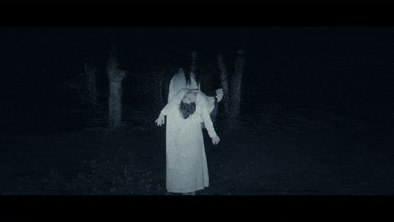

 En las altas horas de la noche, cuando todo parece dormido y sólo se escuchan los gritos rudos con que los boyeros avivan la marcha lenta de sus animales, dicen los campesinos que allá, por el río, alejándose y acercándose con intervalos, deteniéndose en los frescos remansos que sirven de aguada a los bueyes y caballos de las cercanías, una voz lastimera llama la atención de los viajeros. Es una voz de mujer que solloza, que vaga por las márgenes del río buscando algo, algo que ha perdido y que no hallará jamás. Atemoriza a los chicuelos que han oído, contada por los labios marchitos de la abuela, la historia enternecedora de aquella mujer que vive en los potreros, interrumpiendo el silencio de la noche con su gemido eterno. Era una pobre campesina cuya adolescencia se había deslizado en medio de la tranquilidad escuchando con agrado los pajarillos que se columpiaban alegres en las ramas de los higuerones. Abandonaba su lecho cuando el canto del gallo anunciaba la aurora, y se dirigía hacia el río a traer agua con sus tinajas de barro, despertando, al pasar, a las vacas que descansaban en el camino. Era feliz amando la naturaleza; pero una vez que llegó a la hacienda de la familia del patrón en la época de verano, la hermosa campesina pudo observar el lujo y la coquetería de las señoritas que venían de San José. Hizo la comparación entre los encantos de aquellas mujeres y los suyos; vio que su cuerpo era tan cimbreante como el de ellas, que poseían una bonita cara, una sonrisa trastornadora, y se dedicó a imitarías. Como era hacendosa, la patrona la tomó a su servicio y la trajo a la capital donde, al poco tiempo, fue corrompida por sus compañeras y los grandes vicios que se tienen en las capitales, y el grado de libertinaje en el que son absorbidas por las metrópolis. Fue seducida por un jovencito de esos que en los salones se dan tono con su cultura y que, con frecuencia, amanecen completamente ebrios en las casas de tolerancia. Cuando sintió que iba a ser madre, se retiró “de la capital y volvió a la casa paterna. A escondidas de su familia dio a luz a una preciosa niñita que arrojó enseguida al sitio en donde el río era mas profundo, en un momento de incapacidad y temor a enfrentar a un padre o una sociedad que actuó de esa forma. Después se volvió loca y, según los campesinos, el arrepentimiento la hace vagar ahora por las orillas de los riachuelos buscando siempre el cadáver de su hija que no volverá a encontrar. Esta triste leyenda que, día a día la vemos con más frecuencia que ayer, debido al crecimiento de la sociedad, de que ya no son los ríos, sino las letrinas y tanques sépticos donde el respeto por la vida ha pasado a otro plano ,nos lleva a pensar que estamos obligados a educar más a nuestros hijos e hijas, para evitar lamentarnos y ser más consecuentes con lo que nos rodea. De entonces acá, oye el viajero a la orilla de los ríos, cuando en callada noche atraviesa el bosque, aves quejumbrosos, desgarradores y terribles que paralizan la sangre. Es la Llorona que busca a su hija…